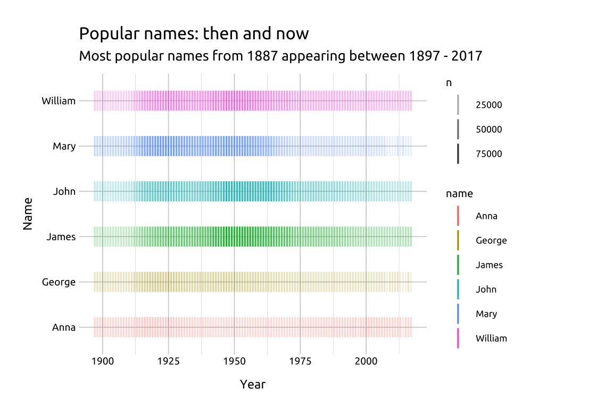
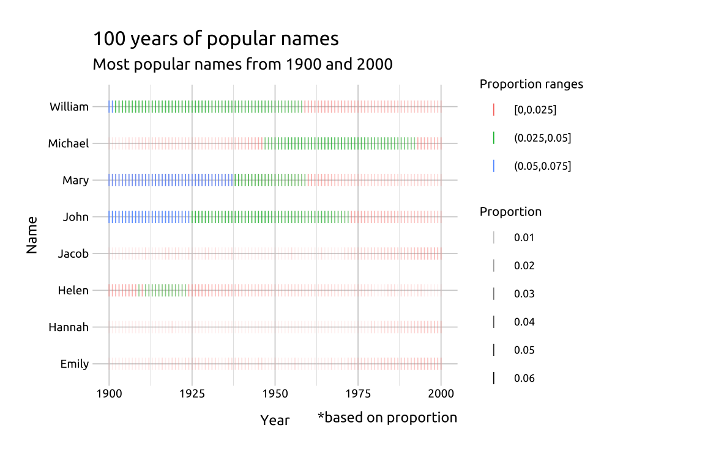
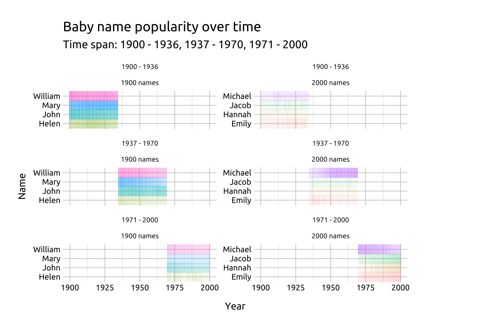

34 Instance chart
34.1 Description
An instance chart (or instance graph) displays frequencies (or ‘instances’) of different categorical values over time time.
The time dimension is placed on the x and each separate categorical item is placed on the y-axis. The instances are typically represented using the vertical hashes from geom_point() (i.e., shape 124 or the ‘pipe’ "|").
Saturation and color are also used to represent different categorical levels and counts.
34.2 Set up
PACKAGES:
Install packages.
show/hide
install.packages("babynames")
library(babynames)
library(ggplot2)DATA:

Filter the
babynames::babynamesto only those names in1887, then group bynameandsex, arrange descending by then, and store only the top 6 names intop_bby_nms_1887.Use the names from
top_bby_nms_1887to filterbabynames::babynamesfor names after1897and store inpopular_bby_nms.
show/hide
library(babynames)
top_bby_nms_1887 <- babynames::babynames |>
dplyr::filter(year == 1887) |>
dplyr::group_by(name, sex) |>
dplyr::slice_max(order_by = sex) |>
dplyr::arrange(desc(n)) |>
utils::head(n = 6) |>
dplyr::ungroup()
top_bby_nms_1887show/hide
popular_bby_nms <- babynames::babynames |>
dplyr::filter(name %in% top_bby_nms_1887[['name']] &
year >= 1897)34.3 Grammar
CODE:
Create labels with
labs()Initialize the graph with
ggplot()and providedataMap
yeartox,nametoy, andcolortonameAdd
geom_point(), mapntoalpha, and set theshapeto124andsizeto5
show/hide
labs_inst_pop_nms <- labs(
title = "Popular names: then and now",
subtitle = "Most popular names from 1887 appearing between 1897 - 2017",
x = "Year",
y = "Name")
ggp2_inst_pop_nms <- ggplot(data = popular_bby_nms,
mapping = aes(x = year,
y = name,
color = name)) +
geom_point(aes(alpha = n),
shape = 124,
size = 5)
ggp2_inst_pop_nms +
labs_inst_pop_nmsGRAPH:

34.4 More info
34.4.1 Saturation with cut_interval()
ggplot2 has two great functions for splitting numerical variables into intervals or widths. We’re going to create two datasets from babynames::babynames that capture the top names in 1900 and and the top names 2000.
show/hide
top_nms_prop_1900 <- babynames::babynames |>
dplyr::filter(year == 1900) |>
dplyr::group_by(sex, name) |>
dplyr::summarise(max_prop = max(prop)) |>
dplyr::slice_max(n = 2, order_by = max_prop) |>
dplyr::ungroup()
top_nms_prop_1900
top_nms_prop_2000 <- babynames::babynames |>
dplyr::filter(year == 2000) |>
dplyr::group_by(sex, name) |>
dplyr::summarise(max_prop = max(prop)) |>
dplyr::slice_max(n = 2, order_by = max_prop) |>
dplyr::ungroup()
top_nms_prop_2000These two tibbles tell us something about the top names over a century. The top names in 1900 have much higher proportions than the top names in 2000s.
We’ll get the names from both tibbles and filter
babynames::babynamesto only these eight names between the years 1900 and 2000.We’ll create a
prop_rangevariable, which splits thepropvariable into intervals based on thelengthargument.
show/hide
nms_1900 <- top_nms_prop_1900[["name"]]
nms_2000 <- top_nms_prop_2000[["name"]]
top_nms_1900_2000 <- c(nms_1900, nms_2000)
popular_bby_nms_prop <- babynames::babynames |>
dplyr::filter(name %in% top_nms_1900_2000 &
year >= 1900 &
year <= 2000) |>
dplyr::mutate(
# proportion range
prop_range = ggplot2::cut_interval(x = prop,
length = 0.025))Below we can see the proportion ranges have been built with the interval notation: "(a,b]"
- We can also see the proportion of names changes considerably between the two groups of names.
show/hide
labs_inst_pop_nms_prop <- labs(
title = "100 years of popular names",
subtitle = "Most popular names from 1900 and 2000",
caption = "*based on proportion",
x = "Year",
y = "Name",
color = "Proportion ranges",
alpha = "Proportion")
ggp2_inst_pop_nms_prop <- ggplot(data = popular_bby_nms_prop,
mapping = aes(x = year,
y = name,
color = prop_range)) +
geom_point(aes(alpha = prop),
shape = 124,
size = 2.5)
ggp2_inst_pop_nms_prop +
labs_inst_pop_nms_prop 
34.4.2 Facets with cut_number()
To demonstrate facets, we’ll create two other variables: year_range and group:
year_rangeusesggplot2::cut_number()to create three groups based on theyear, orders the results, and removes the labels. We manually assign the labels to this variable withcase_when()andfactor()groupis a factor variable with two levels:1900 namesand2000 names
show/hide
popular_bby_nms_fct <- popular_bby_nms_prop |>
dplyr::mutate(
# year range
year_range = ggplot2::cut_number(year,
n = 3,
labels = FALSE,
ordered_result = TRUE),
year_range = case_when(
year_range == 1 ~ "1900 - 1936",
year_range == 2 ~ "1937 - 1970",
year_range == 3 ~ "1971 - 2000"),
year_range = factor(year_range,
levels = c("1900 - 1936",
"1937 - 1970",
"1971 - 2000"),
ordered = TRUE),
group = case_when(
name %in% nms_1900 ~ "1900 names",
name %in% nms_2000 ~ "2000 names",
TRUE ~ NA_character_),
group = factor(group,
levels = c("1900 names",
"2000 names")))Below we can see the total counts of names in the cross-table of year_range and group
show/hide
popular_bby_nms_fct |>
dplyr::count(year_range, group) |>
tidyr::pivot_wider(names_from = group,
values_from = n)In the graph, we’ll create labels using the levels from the year_range variable.
- We can also change the
shapeused ingeom_point()to the pipe operator ("|")
show/hide
# create labels from factor levels
st_lbls <- paste0(
levels(popular_bby_nms_fct$year_range),
collapse = ", ")
labs_inst_pop_nms_facet <- labs(
title = "Baby name popularity over time",
subtitle = paste0("Time span: ", st_lbls),
x = "Year",
y = "Name")
ggp2_inst_pop_nms_facet <- ggplot(popular_bby_nms_fct,
mapping = aes(x = year,
y = name)) +
geom_point(aes(alpha = prop, color = name),
shape = "|",
size = 3,
show.legend = FALSE) +
facet_wrap(year_range ~ group,
scales = "free_y",
ncol = 2)
ggp2_inst_pop_nms_facet +
labs_inst_pop_nms_facet